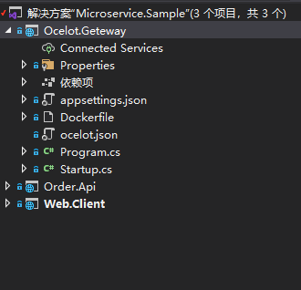
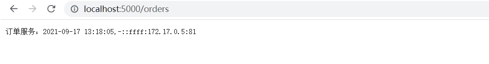
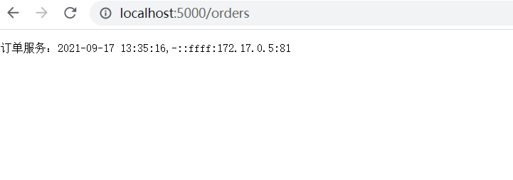

前言
上一篇已经使用Consul完成了服务的注册与发现，实际中光有服务注册与发现往往是不够的，需要一个统一的入口来连接客户端与服务。
Ocelot
官网：https://ocelot.readthedocs.io/ ，Ocelot正是为.Net微服务体系提供一个统一的入口点，称为：Gateway（网关）。
首先创建一个空的 asp.net core web 项目：

注意：ocelot.json 是Ocelot的配置文件，设置生成时需要复制到输出目录。ocelot.json 文件名不是固定的可以自己定义
NuGet 安装 Ocelot，简单修改几处默认代码：
Program.cs：
1 2 3 4 5 6 7 8 9 10 11 12 13 14 15 16 17 18 public class Program { public static void Main (string [] args { CreateHostBuilder(args).Build().Run(); } public static IHostBuilder CreateHostBuilder (string [] args Host.CreateDefaultBuilder(args) .ConfigureAppConfiguration((hostingContext, config) => { config.AddJsonFile("ocelot.json" , optional: false , reloadOnChange: true ); }) .ConfigureWebHostDefaults(webBuilder => { webBuilder.UseStartup<Startup>(); }); }
Startup.cs：
1 2 3 4 5 6 7 8 9 10 11 12 public void ConfigureServices (IServiceCollection services ){ services.AddOcelot(); } public void Configure (IApplicationBuilder app, IWebHostEnvironment env ){ app.UseOcelot().Wait(); }
ocelot.json：
1 2 3 4 5 6 7 8 9 10 11 12 13 14 15 16 17 18 19 20 21 22 23 24 25 26 27 28 29 30 31 32 { "Routes" : [ { "DownstreamPathTemplate" : "/orders" , "DownstreamScheme" : "http" , "DownstreamHostAndPorts" : [ { "Host" : "192.168.31.191" , "Port" : 80 }, { "Host" : "192.168.31.191" , "Port" : 81 }, { "Host" : "192.168.31.191" , "Port" : 82 } ], "UpstreamPathTemplate" : "/orders" , "UpstreamHttpMethod" : [ "Get" ], "LoadBalancerOptions" : { "Type" : "RoundRobin" } } ], "GlobalConfiguration" : { "BaseUrl" : "http://localhost:8000" } }
这里忽略Consul，将服务实例的地址写在配置文件中。配置文件中的 Routes 节点用来配置路由，Downstream 代表下游，也就是服务实例。Upstream 代表上游，也就是客户端。这里路径比较简单，只有 /orders 路径中如果有不固定参数则使用 {} 匹配。这里配置的意思是：客户端访问网关的 /orders，网关会转发给服务实例的 /orders 。
注意：上游的路径不一定要和下游一致，比如上游路径可以配置成/api/orders。LoadBalancerOptions节点用来配置负载均衡，Ocelot内置了 LeastConnection、RoundRobin、NoLoadBalancer、CookieStickySessions 4种负载均衡策略。BaseUrl节点是配置ocelot网关将要运行的地址
运行Gateway：

客户端
上面已经实现通过Ocelot网关访问服务实例，调整客户端代码：这里选择直接新建 GatewayServiceHelper：
1 2 3 4 5 6 7 8 9 10 11 12 13 14 15 16 17 18 19 20 21 22 23 24 25 26 27 28 using RestSharp;using System;using System.Threading.Tasks;namespace Web.Client { public class GatewayServiceHelper : IServiceHelper { public async Task<string > GetOrder ( { var Client = new RestClient("http://localhost:5000" ); var request = new RestRequest("/orders" , Method.GET); var response = await Client.ExecuteAsync(request); return response.Content; } public void GetServices ( { throw new NotImplementedException(); } } }
Startup.cs：修改注入类型
1 services.AddSingleton<IServiceHelper, GatewayServiceHelper>();
下面获取服务地址的代码也不需要了
1 2 // 程序启动时获取服务列表 serviceHelper.GetServices();
经过以上调整现在客户端对服务的调用都通过网关进行中转，客户端不再关心服务实例的地址，只需要知道网关地址就可以。另外服务端也避免了服务地址直接暴露给客户端。这样做对客户端，服务都非常友好。但是又出现了一个新的问题：目前服务地址写在 ocelot.json 配置文件中，一旦服务变化，需要人为的修改配置文件，这又显得不太合理。这里比较常用的方案是：结合Consul来实现服务发现。
服务发现
NuGet 安装Ocelot.Provider.Consul后，修改Startup.cs：
1 2 3 4 5 public void ConfigureServices (IServiceCollection services ){ services.AddOcelot().AddConsul(); }
修改ocelot.json配置：
1 2 3 4 5 6 7 8 9 10 11 12 13 14 15 16 17 18 19 20 21 22 23 { "Routes": [ { "DownstreamPathTemplate": "/orders", "DownstreamScheme": "http", "UpstreamPathTemplate": "/orders", "UpstreamHttpMethod": [ "Get" ], "ServiceName": "order.service", "LoadBalancerOptions": { "Type": "RoundRobin" } } ], "GlobalConfiguration": { "BaseUrl": "http://localhost:8000", "ServiceDiscoveryProvider": { "Scheme": "http", "Host": "192.168.31.191", "Port": 8500, "Type": "Consul" } } }
这个配置很好理解，就是把 DownstreamHostAndPorts 节点去掉然后增加了 ServiceDiscoveryProvider 服务发现相关配置。
注意，Ocelot除了支持Consul服务发现以外，还有Eureka也可以，Eureka也是一个类似的注册中心
浏览器测试：

Gateway正常运行。至此就实现了服务注册与发现和api网关的基本功能。接下来就要提到：服务治理。
服务治理
服务治理没有非常明确的定义。它的作用简单来说，就是帮助我们更好的管理服务，提升服务的可用性。缓存、限流、熔断、链路追踪等等都属于常用的服务治理手段。之前讲的负载均衡，服务发现也可以算是服务治理。
缓存
在Ocelot中启用缓存，需要 NuGet 安装Ocelot.Cache.CacheManager，修改Startup.cs 中的 ConfigureServices() 方法：
1 2 3 4 5 6 7 8 9 public void ConfigureServices (IServiceCollection services ){ services.AddOcelot() .AddConsul() .AddCacheManager(p => { p.WithDictionaryHandle(); }); }
修改ocelot.json配置文件：
超时
熔断
限流